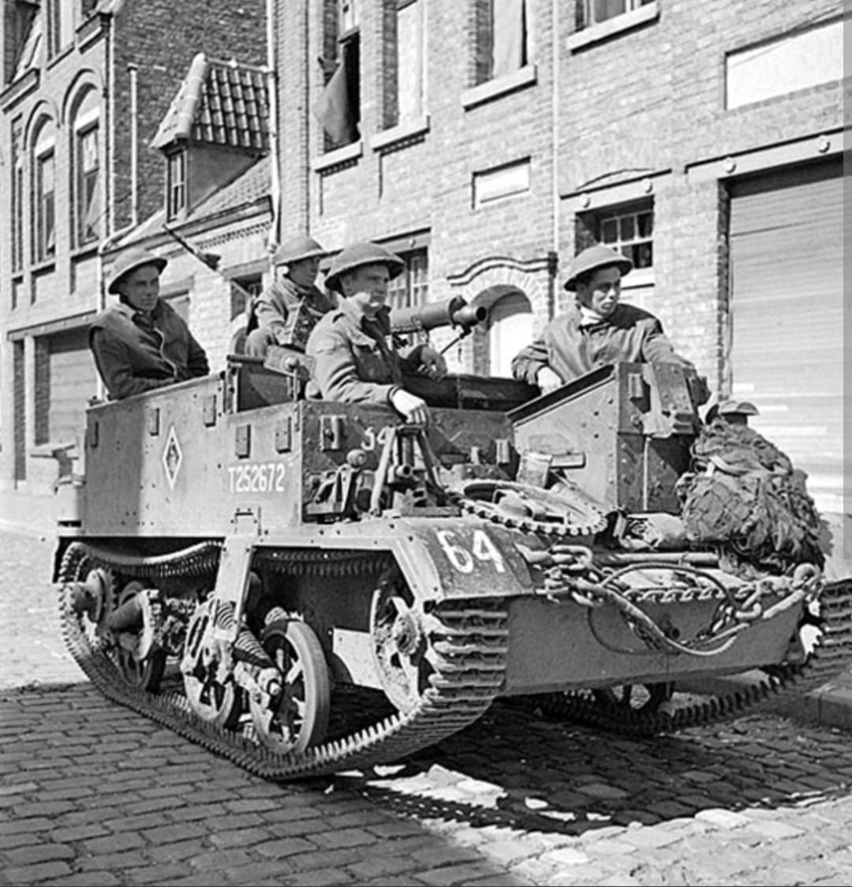
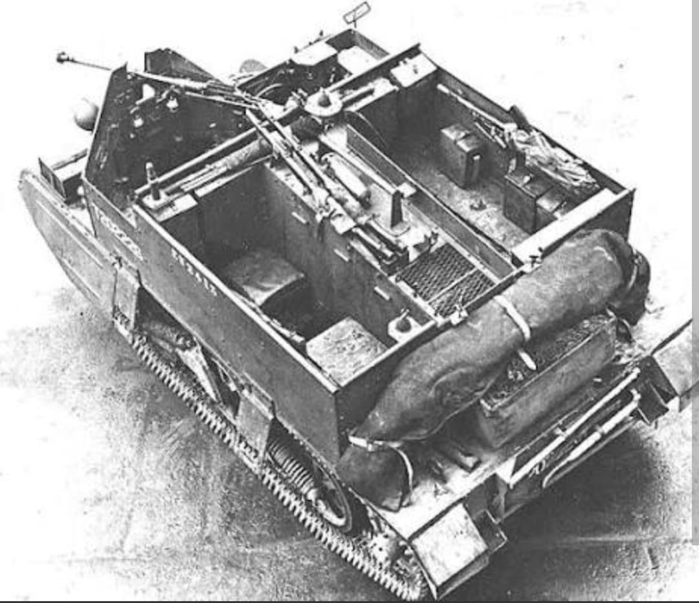
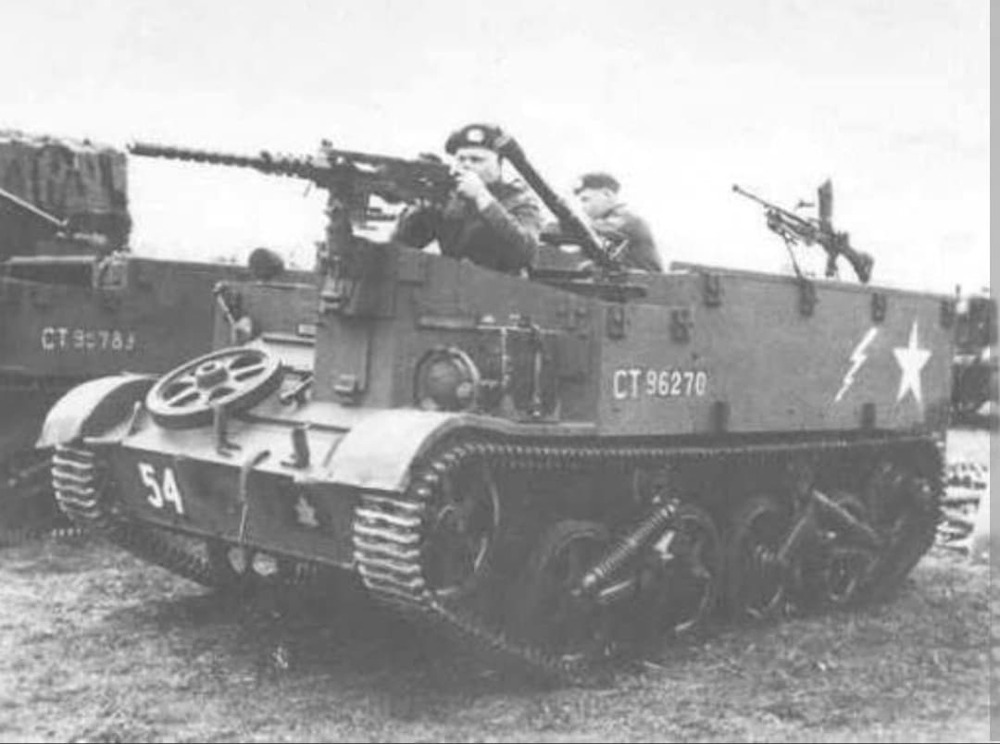

La chenillette blindée légère du Commonwealth, véhicule chenillé le plus produit de l'histoire

L'Universal Carrier (souvent appelé Bren Carrier par les troupes en raison de sa mitrailleuse principale) est une chenillette légère blindée développée au Royaume-Uni dans les années 1930.
Omniprésent au sein du British Army et de l'ensemble des forces du Commonwealth, ce véhicule polyvalent s'est imposé comme la mule mécanique des unités d'infanterie alliées sur tous les fronts de la Seconde Guerre mondiale.
Conçu par **Vickers-Armstrongs** à partir de la chenillette Carden-Loyd, l'Universal Carrier se caractérise par une coque ouverte en partie supérieure, soudée ou rivetée, reposant sur un train de roulement à chenilles. Il était propulsé par un moteur Ford V8 à essence de 85 chevaux.
D'une masse contenue d'environ **3 à 4 tonnes**, il transportait un équipage de 3 à 4 hommes et atteignait une vitesse de **48 km/h sur route**. Son blindage léger (7 à 12 mm) protégeait les occupants contre les tirs d'armes légères et les éclats d'obus.

Déployé des déserts d'Afrique du Nord au bocage normand et dans les jungles d'Asie du Sud-Est, l'Universal Carrier a rempli une variété impressionnante de missions :

Fabriqué à plus de **113 000 exemplaires** entre 1934 et 1960 au Royaume-Uni, au Canada, en Australie et aux États-Unis, l'Universal Carrier détient le record du véhicule blindé chenillé le plus produit de l'histoire militaire.
Outre les forces britanniques et canadiennes, il fut également livré en grande quantité à l'Armée rouge et aux forces de la France Libre. Sa fiabilité et sa simplicité d'entretien en firent un élément indispensable du soutien tactique Allié.
Page du Musée HOP WW2 – Section Véhicules Terrestres Britanniques